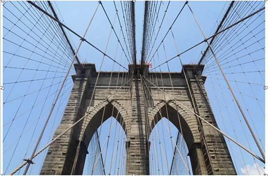

Brooklyn, Where New York City Begins!
By Kelsie Rivera
Manhattan might be best known for its towering skyscrapers and bustling pavement, but there are few New York City locales more loved than the 843 acres of green that is Central Park.
Stretching from Midtown to Harlem, the park is a year-round natural oasis for locals and visitors alike.
With the city’s population ballooning in the mid-19th century, the New York State Legislature set aside a large swath of land to create a much-needed public park. After winning a design contest in 1858, landscape architects Frederick Law Olmsted and Calvert Vaux were tasked with bringing to life what Olmsted called “the lungs of the city.”
The park has changed and evolved over the century and a half since then to become what it is today: a diverse public space encompassing forest paths, ponds and fountains, performance spaces and long, dreamy stretches of green. And the latest change came in June 2018 when the park became automobile-free.
Arriving by subway (from the Manhattan side), Take the 4, 5, or 6 trains to Brooklyn Bridge/City Hall Stop or the J or Z trains to Chambers St. Stop.
The bridge will be right across the street from the subway station.
You could also take the 2 or 3 train to Park Place, the N or R train to City Hall, or the A or C train to Fulton Street.
Arriving by subway (from the Brooklyn side)
You can get take these subways whose stops will be within walking distance of the entrance to the walkway leading to the bridge. The pedestrian stairs on the Brooklyn side are located on Washington Street and Prospect Street, right at the northeast corner of Cadman Plaza.
A, C or F to Jay Street/MetroTech Station
N, R to Court Street Station
2/3 or 4/5 to Borough Hall Station
It was reopened to visitors in 2008.
The Lake is a sight not to be missed if you’re in the mood for a calming
boat ride through bamboo patches, bridges, and natural splendor in the Park.